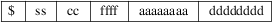

srec_fpc - four packed code file format
All ASCII based file formats have one disadvantage in common: they all need more than double the amount of characters as opposed to the number of bytes to be sent. Address fields and checksums will add even more characters. So the shorter the records, the more characters have to be sent to get the file across.
The FPC format may be used to reduce the number of characters needed to send a file in ASCII format, although it still needs more characters than the actual bytes it sends. FPC stands for "Four Packed Code". The reduction is accomplished by squeezing 4 real bytes into 5 ASCII characters. In fact every ASCII character will be a digit in the base 85 number system. There aren’t enough letters, digits and punctuation marks available to get 85 different characters, but if we use both upper case and lower case letters we will manage. This implies that the FPC is case sensitive, as opposed to all other ASCII based file formats.
Base 85
The numbering system is in base 85, and is somewhat hard to
understand for us humans who are usually only familiar with
base 10 numbers. Some of us understand base 2 and base 16 as
well, but base 85 is for most people something new. Luckily
we don’t have to do any math with this number system.
We just convert a 32 bit number into a 5 digit number in
base 85. A 32 bit number has a range of 4,294,967,296, while
a 5 digit number in base 85 has a range of 4,437,053,125,
which is enough to do the trick. One drawback is that we
always have to send multiples of 4 bytes, even if we
actually want to send 1, 2 or 3 bytes. Unused bytes are
padded with zeroes, and are discarded at the receiving
end.
The digits of the base 85 numbering system start at %, which represents the value of 0. The highest value of a digit in base 85 is 84, and is represented by the character ’z’. If you want to check this with a normal ASCII table you will notice that we have used one character too many! Why? I don’t know, but for some reason we have to skip the ’*’ character in the row. This means that after the ’)’ character follows the ’+’ character.
We can use normal number conversion algorithms to generate the FPC digits, with this tiny difference. We have to check whether the digit is going to be equal or larger than the ASCII value for ’*’. If this is the case we have to increment the digit once to stay clear of the ’*’. In base 85 MSD digits go first, like in all number systems!
The benefit of this all is hopefully clear. For every 4 bytes we only have to send 5 ASCII characters, as opposed to 8 characters for all other formats.
Records
Now we take a look at the the formatting of the FPC records.
We look at the record at byte level, not at the actual base
85 encoded level. Only after formatting the FPC record at
byte level we convert 4 bytes at a time to a 5 digit base 85
number. If we don’t have enough bytes in the record to
fill the last group of 5 digits we will add bytes with the
value of 0 behind the record.

The field are defined as:
|
$ |
Every line starts with the character $, all other characters are digits of base 85. | ||
|
ss |
The checksum. A one byte 2’s-complement checksum of all bytes of the record. | ||
|
cc |
The byte-count. A one byte value, counting all the bytes in the record minus 4. | ||
|
ffff |
Format code, a two byte value, defining the record type. |
aaaaaaaa
The address field. A 4 byte number representing the first address of this record.
dddddddd
The actual data of this record.
Record
Begin
Every record begins with the ASCII character
"$". No spaces or tabs are allowed in a
record. All other characters in the record are formed by
groups of 5 digits of base 85.
Checksum
field
This field is a one byte 2’s-complement checksum of
the entire record. To create the checksum make a one byte
sum from all of the bytes from all of the fields of the
record:
Then take the 2’s-complement of this sum to create the final checksum. The 2’s-complement is simply inverting all bits and then increment by 1 (or using the negative operator). Checking the checksum at the receivers end is done by adding all bytes together including the checksum itself, discarding all carries, and the result must be $00. The padding bytes at the end of the line, should they exist, should not be included in checksum. But it doesn’t really matter if they are, for their influence will be 0 anyway.
Byte
Count
The byte count cc counts the number of bytes in the
current record minus 4. So only the number of address bytes
and the data bytes are counted and not the first 4 bytes of
the record (checksum, byte count and format flags). The byte
count can have any value from 0 to 255.
Usually records have 32 data bytes. It is not recommended to send too many data bytes in a record for that may increase the transmission time in case of errors. Also avoid sending only a few data bytes per record, because the address overhead will be too heavy in comparison to the payload.
Format
Flags
This is a 2 byte number, indicating what format is
represented in this record. Only a few formats are
available, so we actually waste 1 byte in each record for
the sake of having multiples of 4 bytes.
Format code 0 means that the address field in this record is to be treated as the absolute address where the first data byte of the record should be stored.
Format code 1 means that the address field in this record is missing. Simply the last known address of the previous record +1 is used to store the first data byte. As if the FPC format wasn’t fast enough already ;-)
Format code 2 means that the address field in this record is to be treated as a relative address. Relative to what is not really clear. The relative address will remain in effect until an absolute address is received again.
Address
Field
The first data byte of the record is stored in the address
specified by the Address field aaaaaaaa. After
storing that data byte, the address is incremented by 1 to
point to the address for the next data byte of the record.
And so on, until all data bytes are stored.
The length of the address field is always 4 bytes, if present of course. So the address range for the FPC format is always 2**32.
If only the address field is given, without any data bytes, the address will be set as starting address for records that have no address field.
Addresses between records are non sequential. There may be gaps in the addressing or the address pointer may even point to lower addresses as before in the same file. But every time the sequence of addressing must be changed, a format 0 record must be used. Addressing within one single record is sequential of course.
Data
Field
This field contains 0 or more data bytes. The actual number
of data bytes is indicated by the byte count in the
beginning of the record less the number of address bytes.
The first data byte is stored in the location indicated by
the address in the address field. After that the address is
incremented by 1 and the next data byte is stored in that
new location. This continues until all bytes are stored. If
there are not enough data bytes to obtain a multiple of 4 we
use 0x00 as padding bytes at the end of the record. These
padding bytes are ignored on the receiving side.
End of
File
End of file is recognized if the first four bytes of the
record all contain 0x00. In base 85 this will be
“$%%%%%”. This is the only decent way to
terminate the file.
Size
Multiplier
In general, binary data will expand in sized by
approximately 1.7 times when represented with this
format.
Now it’s time for an example. In the first table you can see the byte representation of the file to be transferred. The 4th row of bytes is not a multiple of 4 bytes. But that does not matter, for we append $00 bytes at the end until we do have a multiple of 4 bytes. These padding bytes are not counted in the byte count however!
D81400000000B000576F77212044696420796F7520726561
431400000000B0106C6C7920676F207468726F7567682061
361400000000B0206C6C20746861742074726F75626C6520
591100000000B030746F207265616420746869733F000000
00000000
Only after converting the bytes to base 85 we get the records of the FPC type file format presented in the next table. Note that there is always a multiple of 5 characters to represent a multiple of 4 bytes in each record.
$kL&@h%%,:,B.\?00EPuX0K3rO0JI))
$;UPR’%%,:<Hn&FCG:at<GVF(;G9wIw
$7FD1p%%,:LHmy:>GTV%/KJ7@GE[kYz
$B[6\;%%,:\KIn?GFWY/qKI1G5:;-_e
$%%%%%
As you can see the length of the lines is clearly shorter than the original ASCII lines.
http://sbprojects.fol.nl/knowledge/fileformats/fpc.htm
This man page was taken from the above Web page. It was written by San Bergmans <sanmail@bigfoot.com>
For extra points: Who invented this format? Where is it used?